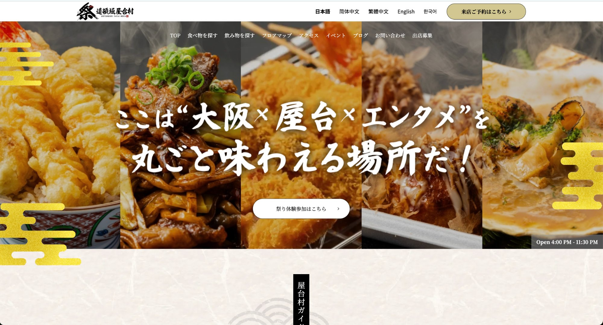
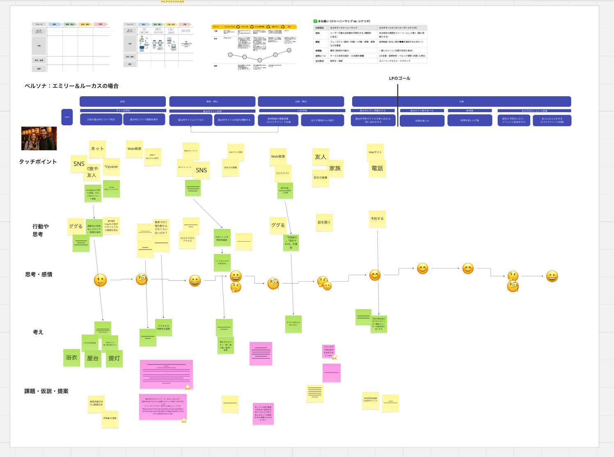
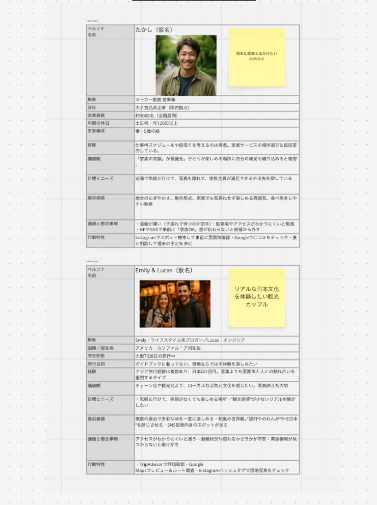
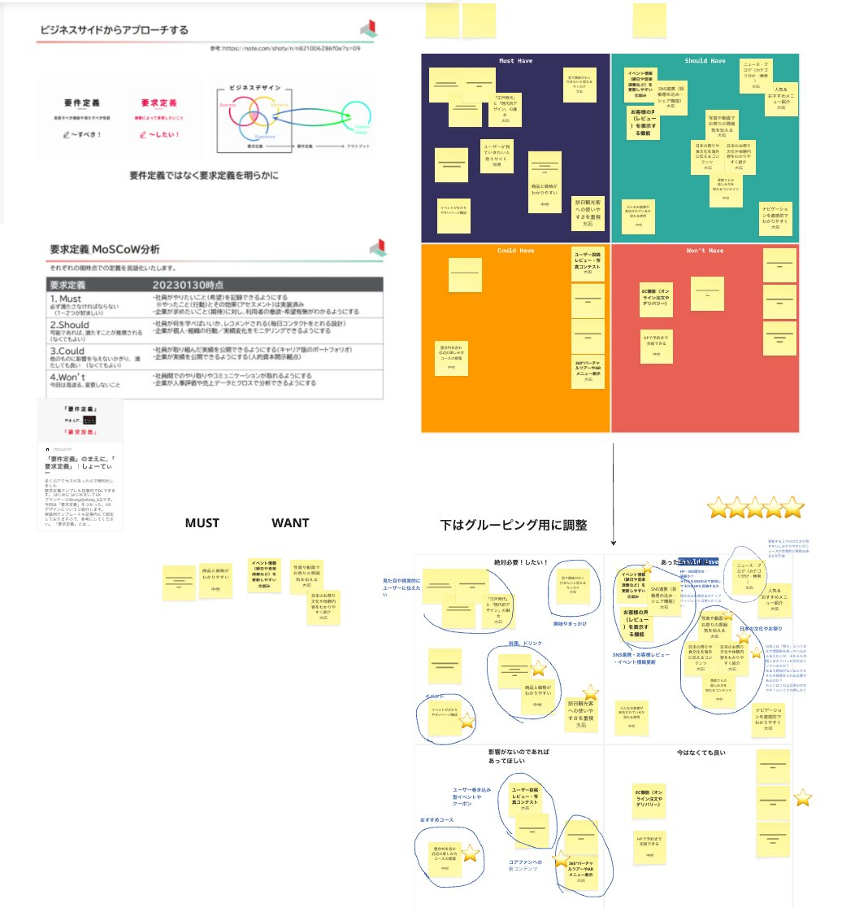
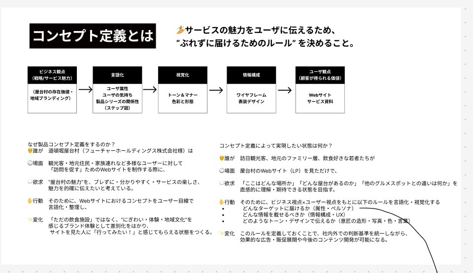
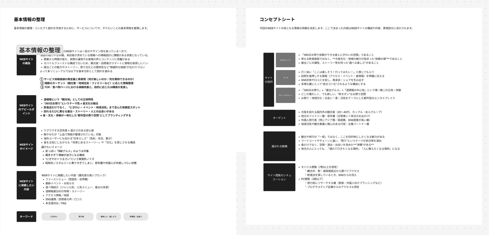
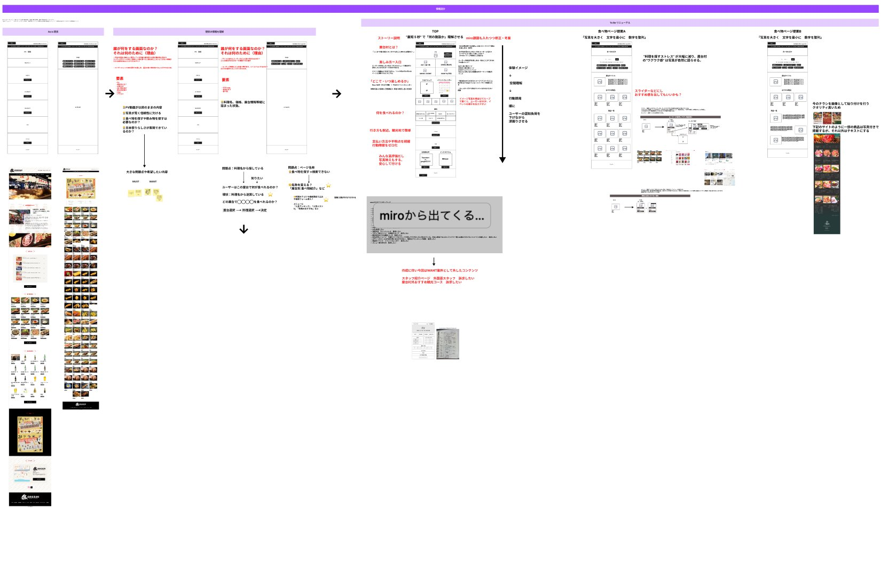
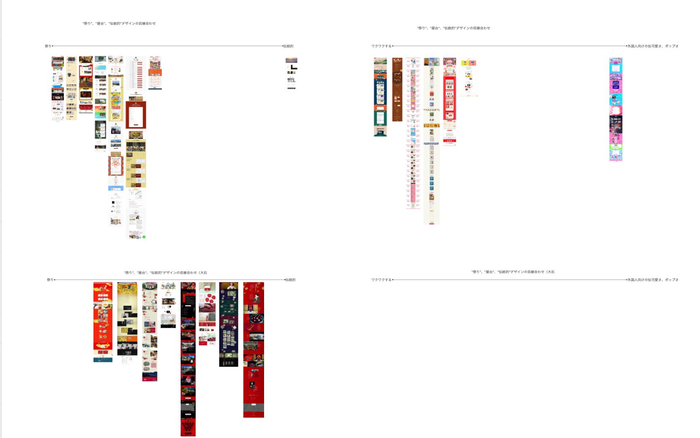
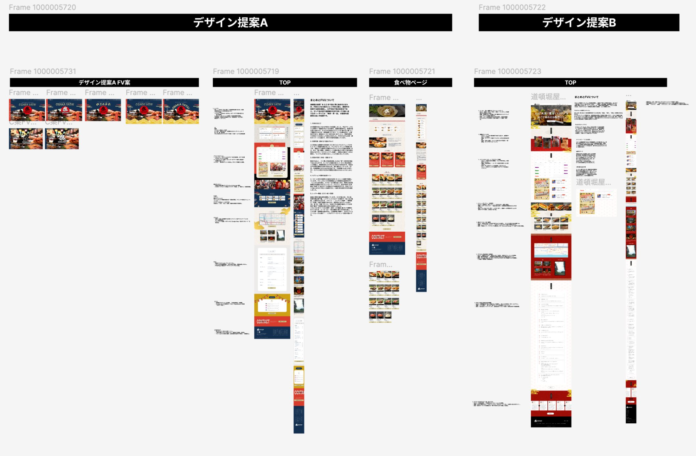

Brand Experience Design — Case Study
Design — 木下スタジオ / 木下貴博（滋賀・琵琶湖）

— Origin / このプロジェクトの問い
このプロジェクトは
「なぜ、いいものが伝わらないのか？」
という問いから始まりました。
屋台村は魅力がないのではなく、"魅力の伝わり方がズレていた"。
01 — Problem
道頓堀川沿いに誕生した屋台村には、串カツ・海鮮・お好み焼きなど多彩な屋台が並ぶ。入場無料・毎日営業・アクセス抜群——条件は揃っていた。しかし「ただ食べに行く場所」として認識されると、それは無数にある飲食エリアのひとつに過ぎなくなる。
課題は食べ物ではなかった。屋台村には、屋台文化固有の体験価値があった。それは距離感・会話・空気・祭りの空間——しかしその価値がWebに出ると、メニューとアクセス情報だけになって薄まっていた。
— 課題 01
情報としてのWebになっている。メニュー・営業時間・アクセスは揃っているが、屋台村に来たときの「あの感覚」がWebから伝わらない。
— 課題 02
体験の本質が可視化されていない。「食べられる場所」と「祭りの空気を体験できる場所」はまったく異なる体験だが、その差がデザインに出ていない。
— 課題 03
ターゲットが曖昧。観光客・地元客・インバウンド——誰に何を届けるかが設計されていないため、誰にも刺さらないWebになっていた。
— 課題 04
ブランドの記憶が残らない。来店した人が「道頓堀屋台村だった」と記憶するビジュアルの核がなかった。体験は一時的で、リピートに繋がりにくかった。
— Customer Scenario / FigJam

ペルソナ（Emily & Lucas）のカスタマーシナリオをFigJamで設計。タッチポイント・行動・思考・感情・課題の5層で整理。
02 — Insight
ユーザーリサーチと現場観察を通じて、屋台体験の核心が見えてきた。レストランと屋台の違いは「料理の質」ではない。人との距離感・会話・偶然性・祭りの空気——それが屋台に人を引き寄せる本質だった。
しかし多くの観光サイトは、その魅力を「情報」としてしか伝えていなかった。メニュー・価格・営業時間——これらは正確だが、体験ではない。Gap（ズレ）はここにあった。届けたい体験は「祭りの空気感」なのに、届いている情報は「飲食施設のデータ」だった。
道頓堀川沿いという立地も重要だった。水辺・夜・提灯・喧騒——この「場の空気」が屋台体験を完成させていた。観光客にとっては「本物の大阪」への入口であり、地元客にとっては「日常の中の非日常」だった。
↑ SVGサンプル図。実際に設計したペルソナは以下の通りです。
— Actual Persona Document

実際のペルソナ設計書。たかし（国内・家族連れ）/ Emily & Lucas（インバウンド観光客）の2軸で詳細設計。
— Requirements / MoSCoW Analysis

MoSCoW分析による要件定義。Must / Should / Could / Won'tで機能優先度を整理し、ビジネスニーズとユーザーニーズを統合。
03 — Experience Strategy
Experience Strategyの核心は、屋台の本質を「料理の提供」から「祭りの体験」へ再定義することだった。人・距離感・会話・空気——これら4つの体験軸を設定し、すべての設計判断の基準とした。
— 01
HUMAN CONNECTION
屋台主との距離感・会話・温度感。顔の見える食の体験が屋台の本質。
— 02
DISTANCE / MA
レストランでもなく、コンビニでもない。屋台だけが持つ「ちょうどいい距離感」。
— 03
CONVERSATION
「いらっしゃい」の声・隣の席との会話・偶然の出会い。屋台は会話が生まれる装置。
— 04
ATMOSPHERE
提灯・川・夜・喧騒——この空気感が「祭り」体験を完成させる文脈だ。
— Brand Experience Framework
Brand → Experience → Touchpoints → Design の4層構造で屋台文化をブランド体験として設計した。
— Brand Experience Map
* これはイメージサンプルです。実際の成果物は受注後、プロジェクトの内容に合わせて設計・制作します。
— Customer Journey
↑ SVGサンプル図。実際に設計した戦略ドキュメントは以下の通りです。
— Concept Definition

コンセプト定義シート。ビジネス観点×ユーザー観点を統合し「ぶれずに届けるためのルール」を言語化。
— Concept Sheet / Base Information

基本情報整理とコンセプトシート。サイトの目的・ゴール・アピールポイント・ターゲット・選ばれる動機を定義。
— Information Architecture

情報設計とコンテンツ構造の整理。As-is分析から要件抽出、IA設計まで一連のプロセスをMiroで可視化。
— Before
既存のWebサイトは「飲食施設の案内ページ」として機能していた。情報は正確に並び、UIも整っていた。しかしそれだけだった。
— 情報は整理されている
メニュー・価格・営業時間は正確に記載されていた。
— UIも整っている
構造は読みやすく、スマートフォンにも対応していた。
— しかし体験は伝わらない
「なぜここに行くのか」という動機が生まれない。祭りの空気・距離感・人との接触——屋台の本質がどこにも表現されていなかった。
— ブランドの記憶が残らない
訪れた人が「道頓堀屋台村だった」と記憶するビジュアルの核がなかった。体験は一時的で、リピートに繋がりにくかった。
04 — Design
Experience Strategyで定義した4つの体験軸（人・距離感・会話・空気）を、Webデザインとして実装した。赤い提灯・道頓堀川・夜の空気——これらをビジュアル言語として体系化し、情報設計に落とし込んだ。
— Design Chart / 方向性のすり合わせ

デザインチャートによる方向性のすり合わせ。「祭り↔伝統的」「ワクワク↔外国人の可愛さ」の2軸で競合と自社のポジションを整理。
— Design Proposal A / B — Figma

Figmaでのデザイン提案。A案（祭り感×モダン）・B案（伝統的×インバウンド）の2方向で制作。クライアントとの協議を経てA案ベースで決定。
— Visual Direction
赤・黒・金のビジュアル言語
提灯・和紙テクスチャ・金の装飾をビジュアル文法として定義。「大阪らしさ」と「祭りの高揚感」を両立させる配色・書体システム。
— Hero Copy
"大阪×屋台×エンタメ"を丸ごと味わえる場所
コピーで「料理」ではなく「体験の総体」を伝える。ファーストビューで来場の動機を完結させる設計。
— Navigation
「祭りガイド」としての情報設計
食べ物・飲み物・フロアマップ・イベント・アクセスを「祭りを楽しむためのガイド」として再構成。ユーザーが迷わない導線設計。
— Multilingual
5言語対応のインバウンド設計
日本語・英語・簡体中文・繁体中文・韓国語に対応。ペルソナ Emily & Lucas の「言語の壁なく楽しめる」というニーズを実装。
— Experience Quality / 体験の質感設計
— Visual
夜・暖色・コントラストの抑制
提灯の赤・夜の黒・金の差し色。高コントラストではなく、暖かさを維持した配色設計。「祭りの夜」を視覚で体験させる。
— Spacing
余白を広く・密度を下げる
屋台の「ゆるさ」と「偶然の出会い」を余白で表現。詰め込まないことで、情報ではなく空間として体験させる。
— Tone
観光情報ではなく文化として語る
「食べられます」ではなく「祭りに来ませんか」。コピーのトーンをガイドブックから体験の招待状へと転換した。
05 — Result
ブランド体験の再定義により、道頓堀 屋台村 祭は「たくさんある飲食エリアのひとつ」から「大阪の屋台文化を体験できる場所」としてのポジションを獲得した。WebからSNSまで一貫した体験設計が、来場者の「また来たい・人に伝えたい」という感情を生み出した。
— Completed Site / osaka-yataimura.com
完成したWebサイト。ファーストビューで「大阪×屋台×エンタメ」を体験させる設計。5言語対応・モバイルファーストで実装。
体験REPOSITIONING
「料理を食べる場所」から「祭りの空気を体験する場所」へのブランド体験の再定義に成功。
一貫CONSISTENCY
Web・SNS・現場サインまで、すべての接点で同じ「祭り体験」が届く設計を実現。
記憶MEMORABILITY
「道頓堀 屋台村 祭」として記憶されるビジュアルアイデンティティの確立。リピートと口コミの起点に。
— Result / この翻訳により
— 01
来訪者の理解が変化した
「食べに行く場所」から「祭りの体験をしに行く場所」へ。訪問動機そのものが変わった。
— 02
体験の捉え方が変わった
料理情報の羅列から、祭りの空気感を伝えるサイトへ。設計の転換が体験の質を変えた。
— 03
「再現性」が証明された
「ズレを発見し、翻訳する」というプロセスが、実際の設計変化として機能することが実証された。
— Studio
木下スタジオ（Kinoshita Studio）は、滋賀県・琵琶湖を拠点に活動するデザイナー木下貴博のスタジオです。Webデザイン・UX/UIデザイン・アートディレクション・グラフィックデザインまで、一人で設計から制作・ディレクションを一貫して担当します。
本案件は ブランド体験設計 · 大阪エリア の仕事です。「届けたい体験と届いている体験のズレを揃える」を核心に、地域の企業・全国のクライアントのビジョンを体験に翻訳しています。